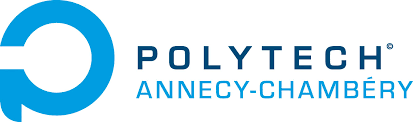

jdcoffre@gmail.com
jdcoffre@gmail.com in/jdcoffre
in/jdcoffreTravailleur passionné et investi, j'ai passé la majeure partie de ma carrière dans le secteur de l'édition logicielle. Au fil de mes expériences professionnelles, j'ai acquis un savoir-faire technique, humain et business. Rompu à différents types d'organisations (AGILE, holocratique, verticale), j'aime le travail en équipe et suis conscient de l'importance de conserver un bon équilibre entre productivité, créativité et intelligence collective. C'est pourquoi, je cherche à toujours travailler dans des contextes cultivant l'innovation et le travail d'équipe.
Aujourd'hui responsable des équipes service-client du leader de la qualité et de la sécurité logicielle. Je gère les activités d'avant-ventes, de support et le "customer success". Ayant eu la chance de contribuer à la forte croissance de cette entreprise, cette expérience m'a beaucoup appris. Choisir ses batailles, transformer l'activité sans compromettre le niveau de service et accompagner les équipes dans la conduite du changement. Je suis fier d'avoir créé en Europe et aux Etats-Unis des équipes techniques solides qui supportent aujourd'hui les grands acteurs de l'industrie logicielle.
Compétences
- Bases de programmation dans de nombreux langages de programmation, connaissances des principaux outils DevOps, analyse et investigation de problèmes techniques, collaboration avec les équipes de vente et les équipes produit
- Recrutement, définition d'objectifs, création d'équipes, gestion opérationnelle, collaboration basée sur intelligence collective
- Support technique, gestion d'incidents, "customer success"
- Expérience de collaboration avec les équipes business incluant le PDG et le conseil d'administration ; identification de points de friction business et mise en place de solutions
Expériences Professionnelles
Head of Services

En 2019, la société Sonar a besoin d'accélérer significativement sa croissance. Les équipes Supports et Consulting éprouvent des difficultés à couvrir l'ensemble des besoins clients. Fort de mon expérience acquise avec l'équipe support, j'accepte de prendre la responsabilité de l'ensemble des équipes services client. Ce poste a été créé afin de faciliter les échanges entre les équipes et de construire une vision cohérente avec les besoins de l'entreprise.
Responsabilités
- Définition la stratégie du service client en cohérence avec la vision d'entreprise
- Recrutement et gestion RH des équipes
- Transformation des processus d'équipes pour permettre un changement d'échelle et améliorer l'expérience client
- Rapport réguliers au PDG et au conseil d'administration
Réalisations
- Transformation du processus de recrutement et de formation des nouveaux employés
- Définition de critères de niveau de service et transformation des processus de collaboration afin d'augmenter la productivité
- Élargissement de la couverture horaire et géographique de nos services
- Création de processus complémentaires entre les équipes avant-ventes, support et "customer success"
- Mise en place d'une collaboration claire entre les équipes Services, Marketing, Ventes et Produits
Résultats
- Triplement des effectifs en l'espace de 2 ans
- Réduction du temps de recrutement de plusieurs mois à quelques semaines
- Formation des nouveaux employés réduite de 36 à 12 semaines avec amélioration du taux de succès
- Couverture de la plage horaire américaine
- Réduction significative du temps de réponse et du temps de vie des tickets clients
- Rétention client à hauteur de 93% en 2022
Ingénieur Support
En tant qu'utilisateur des produits Sonar, je suis d'ores et déjà un fervant supporteur du produit. Le support client est alors souvant dispensé par le PDG et les équipe de développement. Je rejoins la société en temps qu'ingénieur support afin de me consacrer sur l'aide à la mise en place et à l'utilisation du produit par les clients.
Responsabilités
- Aider les clients avec l'implémentation et l'utilisation de nos produits
- Limiter le temps dédié par le PDG et les équipes de développement avec les clients
- Faire remonter les problèmes produits et les besoins client non-couverts
Réalisations
- Remplacement des emails par un système de tickets pour améliorer l'efficacité et le niveau de service rendu
- Participation au recrutement en faisant passer des entretiens d'embauche
- Création d'un programme d'échange de connaissances et d'un processus d'apprentissage pour aider à intégrer les nouveaux ingénieurs support
- Création d'un processus de gestion de tickets permettant de prioriser, de définir des critères de niveau de service et de faire un suivi de l'activité
- Contribution à l'amélioration de fonctionalités produit
Résultats
- Support de clients à l'international sur l'utilisation de Sonar avec 27 langages de programmation différents sur les plateformes DevOps les plus répendues
- Croissance de l'équipe de 1 à 7 personnes
- Passage l'activité d'une centaine d'emails à plus de 4600 tickets clients en 2019
- Création d'une méthode d'intégration et de montée en compétence des nouveaux arrivants qui inspirera les autres équipes de la société
Ingénieur DevOps

- Formation des équipes de développement aux bonnes pratiques du DevOps
- Création et gestion de la chaine d'intégration continue de la société
- Développement d'outils DevOps
Résultats
- Unification et standardisations de la chaine d'intégration continue de la société
- Formation de plusieurs équipes en Europe et aux Etats-Unis
- Création du premier projet OpenSource de la société
Développeur Java
- Développement d'applications B2B en cycles AGILE
- Collaboration avec des équipes de développement à l'international
- Développement d'application Bus et d'applications modulaires
Scolarité
-
Diplôme d'ingénieur en Génie Logiciel et Organisationnel2006 - 2009
-
Classes préparatoires Math Sup - Math Spé2004 - 2006
-
Bac Scientifique2004
Langues
Francais : Langue maternelle
English : Bilingue
Centres d'intérêts et loisirs
- Secrétaire de l'association de mon village
- J'aime la bonne cuisine, le vin et la bière ; j'adore cuisiner en famille ou entre amis
- J'aime la marche et me connecter à la nature en jardinant ou en prenant soin de mes animaux
- J'aime le sport en général ; j'ai pratiqué le handball pendant plusieurs années et je me concentre aujourd'hui sur la course à pied, la natation et le vélo
- Je suis motard et j'aime jouer de la guitare en total autodidacte